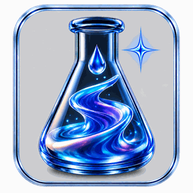
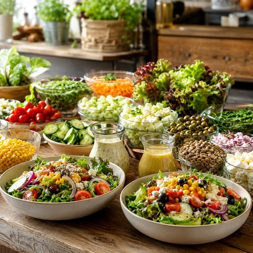
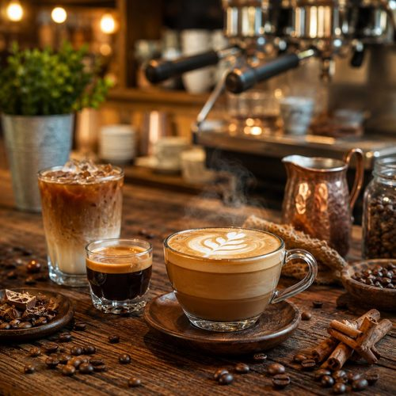
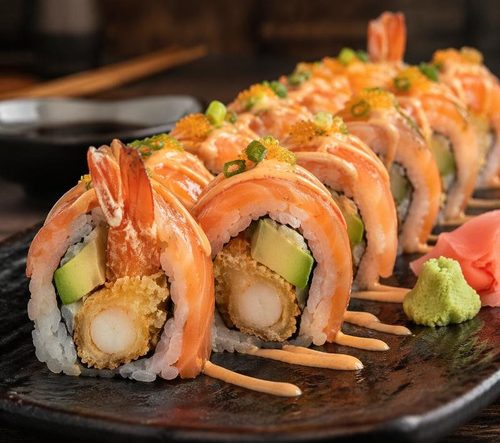
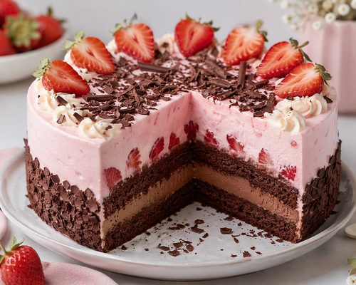
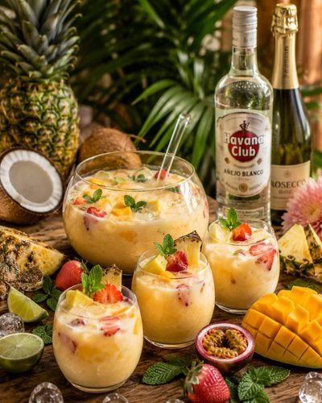
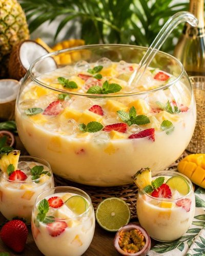
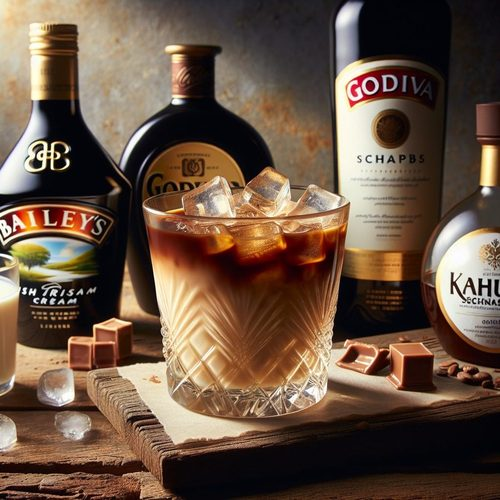
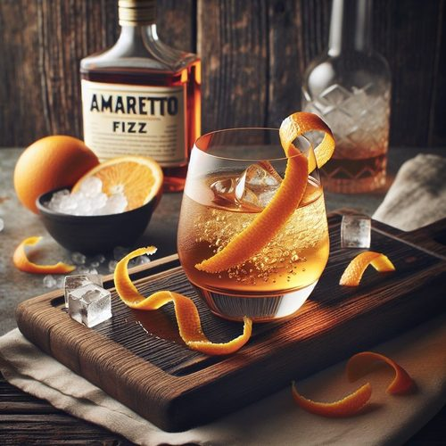
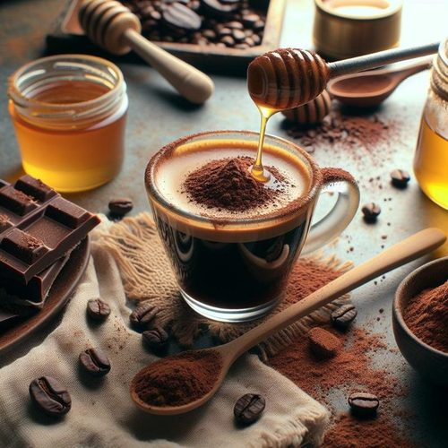

Dein persönliches Getränke-Labor: Mocktails, Smoothies, Cocktails, Bowlen — als App auf deinem Gerät, offline, mit KI-Labor. Und wenn du willst: komplett umbaubar zu deiner ganz eigenen Bar.
▶ Die App in Aktion: Getränke-Buch, Suche, Rezept-Wechsel per Wisch, KI-Labor, Wochenplan, 8 Sprachen, Backup-Tresor — und wie du die Themen (Farb-Looks) wechselst.
Das Besondere
Dein Buch, deine Datenbank, dein Labor — alles auf deinem Gerät.
Dein Getränke-Buch
Jedes Rezept, das du hineinbringst, wird Teil deiner eigenen Datenbank: mit Foto, Zutaten, Schritten, Kategorien und Ordnern — durchsuchbar, offline, nur bei dir.
KI-Labor
Das Labor erfindet auf Wunsch neue Rezepte nach deinem Geschmack. Du bewertest — Gutes wandert ins Buch, der Rest fliegt raus.
Bekannte Drinks entdecken
Die App holt dir Klassiker aus der großen öffentlichen Cocktail-Datenbank (TheCocktailDB) — in 7 Sprachen, mit einem Tipp in dein Buch übernommen.
Tauschen, sichern, hereinladen
Dein Buch ist eine Datei — und Dateien kann man teilen.
Teilen & Tauschen
Exportiere einzelne Cocktails oder dein ganzes Buch als JSON-Datei („Jason“) und gib sie weiter — an Familie, Freunde, andere Mixarium-Nutzer.
Hereinladen
Bekommst du eine Datei, lädst du sie mit einem Tipp herein — hinzufügen oder ersetzen, du entscheidest. Doppelte erkennt die App selbst.
Backup-Tresor
Mehrere Sicherungen nebeneinander verwalten. Ein Fehlgriff? Einfach den letzten Stand zurückholen.
Das Mixarium ist keine feste Cocktail-App — es ist ein Baukasten. Lade ein komplett neues Rezept-Paket (JSON) herein, benenne Kategorien und Ordner um, ordne alles neu an: schon wird aus dem Getränke-Labor dein ganz eigener Markt.
- 1Eigenes JSON hereinladen (oder das Buch leeren und neu befüllen) — beim Import wählst du „ersetzen“.
- 2Kategorien und Ordner umbenennen, mit eigenem Symbol — aus „Mocktails“ wird z. B. „Salate“.
- 3Eigene Fotos, eigene Rezepte, eigene Sprache — fertig ist deine eigene App.
Der Beweis steckt schon im Buch des Betreibers: neben Bowlen und Cocktails leben dort längst Sushi-Rollen und eine Erdbeer-Torte — das Mixarium macht mit.




Aus dem echten Buch
Referenz-Bilder aus dem laufenden Mixarium des Betreibers.




